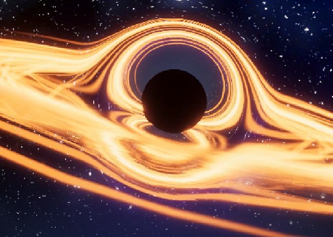
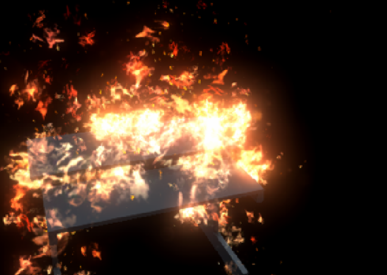
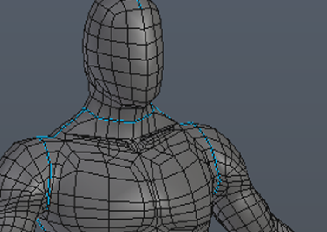
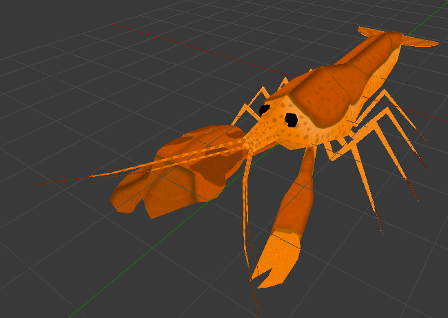

I am a young artist from Brazil, since 2012 I've been studying and working on video-games and 3D modelling and digital sculpting, PBR Texturing, and Animation.
I was graduated at 2 professionalizing courses, the first on 2014, Seven Games, Which later became Redzero and in 2015 on Technician of Digital Games Development at SENAI.
Later, besides freelancing, I worked as an intern at Ministério Público do Rio de Janeiro, where I worked on an VR fire accident simulator and have been a 3D modelling teacher at Code4all and 3D modeller and animator at Fire Games Studio, the last 2 I work till this date.
In my work I like to explore the deepest traits of the character or object I'm working on. Alway eager to ensure quality, personality and depth and put heart and soul into It.
I am available for working abroad, be It freelancing, moving to the country/city, or remotelly
My Résumé
Arthur de Souza Júnior
2D and 3D Artist
Contact
Telephone Number: +55 21 2492-5136;
Cellphone Number: +55 21 99648-9674;
E-mail: arthurdsjrj@gmail.com;
Rio de Janeiro; Brazil
Skills
Pixologic Zbrush
Unity
Blender 3D
Substance Painter
Autodesk Maya
C# Scripting
Python Scripting
HTML, CSS, Javascript
Languages
Portuguese
English
Mandarim Chinese (Basic)
Spanish (Basic)
Hobbies
Studying new Tools
Researching for stories and writing
Development of Personal Game Projects
Modelling
Playing Video Games
Watching and analyzing animations
Professional Profile
I am 23 years old, full of determination. Always doing my best to accomplish deadlines and goals. Besides that, I am able to manage crisis , have easy learning, Skills with team work, and very creative.
Education:
2015 - today : Universidade Federal Fluminense
Computing University Course
2014 - 2016 : SENAI Game Development Technician
Game Development Technician Course
2012 - 2015 : Seven Game/ RedZero
Game Development Full Course
2010 - 2017 : Yázigi Course
English Course
Graduated in 2014 : Escola Mater/ Colégio São Conrado
Elementary School and High School
Work Experience:
2019 - today : Fire Games Studio
Primary Job: 3D Artist (Modelling, Animation, Texturing)
2019 - today : Code4All
Primary Job: 3D Modelling teacher
2016 - 2018 : Ministério Público do Estado do Rio de Janeiro
Primary Job: Augmented and Virtual Reality 3D Designer. Secondary Job: Unity C# Programmer
2014 : SEBRAE
Project Developed: A Game About Entrepreneurship
2014 : InovApps Game Contest
Project Developed: An Educative Game Project for Kids
2012 - today : Freelancer
3D Designer and Game Developer
Professional Studies:
Unreal Engine 4
Marvelous Designer
Substance Designer
3DS Studio Max
My Portfolio
Besides this website, here's some of the work and visual achievements through my life!
They're in orther, from the most recent on the top left, to the oldest in the bottom right.
The Doom Marine
Black Hole (Unity)
(View gif)

Adaptable Fire
(View gif)

MPRJ Interior
(View gif)
Adam Blake (W.I.P.)
Sergeant Sayra (W.I.P)
O.M.E.G.A Gabriel
Catwalk
Adam Blake (Ver 2.0)
Male Human Body Base

Toga
Black Hole
Building
Zakk Wylde Running
Zakk Wylde Pixel Art
Spin Riffle ACDG-004
Sergenant Sayra (Geometry Ver. 1)
Lakkian Rifle
Adam Blake (First Ver.)
O.M.E.G.A Alpha Version Screenshot
O.M.E.G.A Giallini
O.M.E.G.A Daniel and Bohrian
Fighter Jet Cave Crash Site Easter Egg
Pistol Shrimp

Karma Game Logo
Karma Game Protagonist
×
The Doom Marine (Unity)
This one was made as a fan tribute.
Purpose: fanart; Name of referred franchise: Doom (desenveloped Id Software and published by Bethesda); Tools:Blender, Zbrush, Photoshop, Substance Painter, Unity Year: 2020
The human dummy walking on It is the same as the dummy from the toga model, almost bodyless since it's a mobile application with cloth physics, it should be way simpler topology compared to the standard base made after it and with less polygons as possible, since it will be using clothes no body needed. only the rigging and bone colliders.